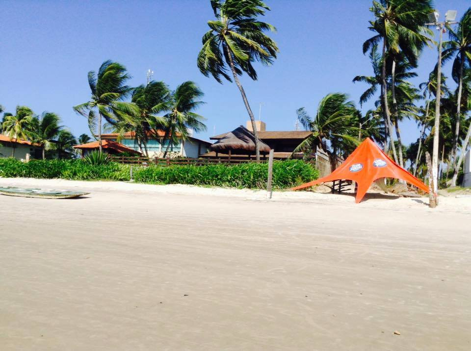
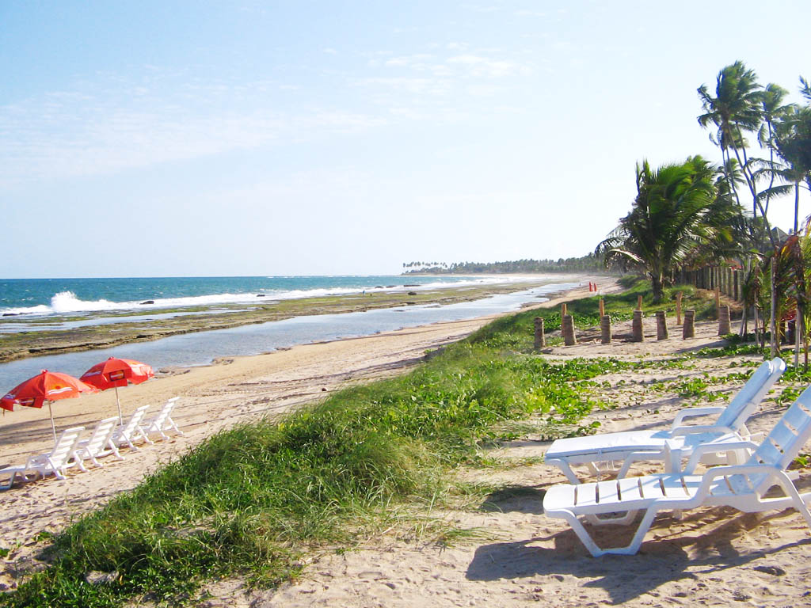
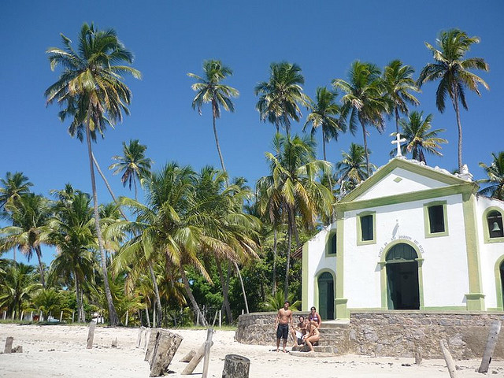

Informacoes
Voos e carro
Ida
GOL 1614
CGH Sao Paulo -> REC Recife
Terca, 30 de junho de 2026
- Sai
- 11:50 - Congonhas
- Chega
- 15:05 - Guararapes
- Duracao
- 3h15
Volta
GOL 1587
REC Recife -> GRU Sao Paulo
Sexta, 10 de julho de 2026
- Sai
- 12:50 - Guararapes
- Chega
- 16:05 - Guarulhos
- Bagagem
- mochila + mala de mao
Carro
Voucher 9282895
Chevrolet Spin ou similar
Rota do Sol Rent a Car - Aeroporto de Recife
- Retirada
- 30/06, 16:00
- Devolucao
- 10/07, 16:00
- Detalhe
- 7 lugares, automatico, ar, km livre
Atencao
Ajustar devolucao
Carro x voo de volta
O voucher do carro marca devolucao em 10/07 as 16:00, mas o voo REC -> GRU sai as 12:50. Confirmar com a locadora a devolucao antecipada no aeroporto.
Ceu e mare
Previsao do tempo
A previsao abaixo vem online da Open-Meteo para Porto de Galinhas. Se o celular estiver sem internet ou a API falhar, a pagina mostra um plano B gravado para nao ficar vazia.
Checar tabua das maresRoteiro equilibrado
Agenda de 10 dias
Planejamento
Reservas e decisoes
Reservar antes
- Jangada das piscinas naturais no dia de melhor mare baixa.
- Buggy ponta a ponta, idealmente a tarde para pegar por do sol.
- Carneiros com base/catamara se o grupo quiser estrutura.
- Maragogi apenas se todos toparem o deslocamento mais longo.
Decidir na vespera
- Piscinas naturais e Muro Alto dependem muito da mare.
- Recife/Olinda pode migrar para dia nublado.
- Dia livre deve continuar livre, sem culpa.
- Restaurantes da vila: escolher pelo humor das criancas.
Para nao esquecer
Checklist compartilhavel
Pode clicar sem medo: os marcados ficam salvos neste aparelho e neste navegador.
Status: pronto para marcar.
Mapa
Base e passeios
So para dar vontade
Fotos



Trilha da viagem
Playlist para animar
Modo gratis
Os botoes abrem buscas prontas no YouTube Music. Nao cria uma playlist na sua conta, mas ja deixa a fila da viagem a dois toques de distancia.